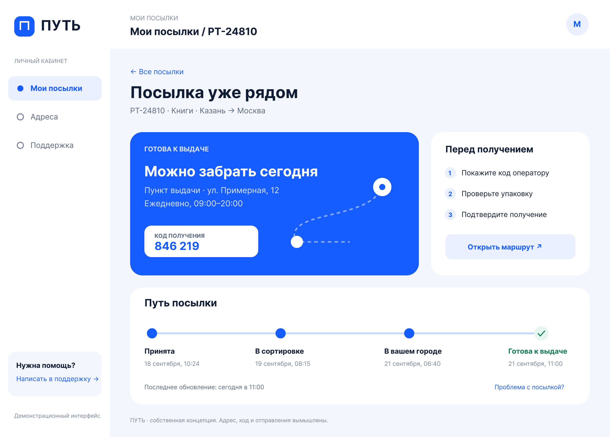
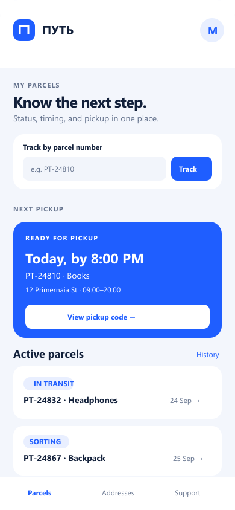
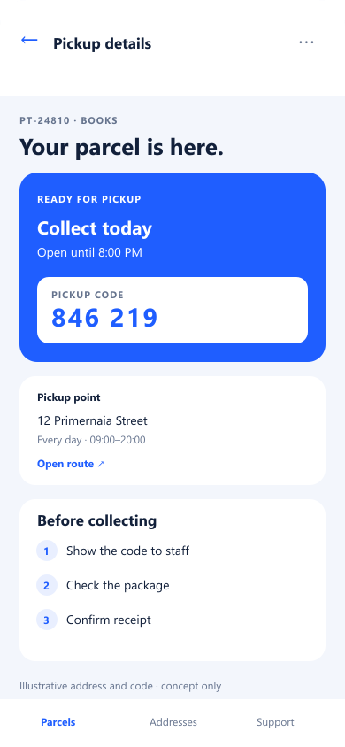
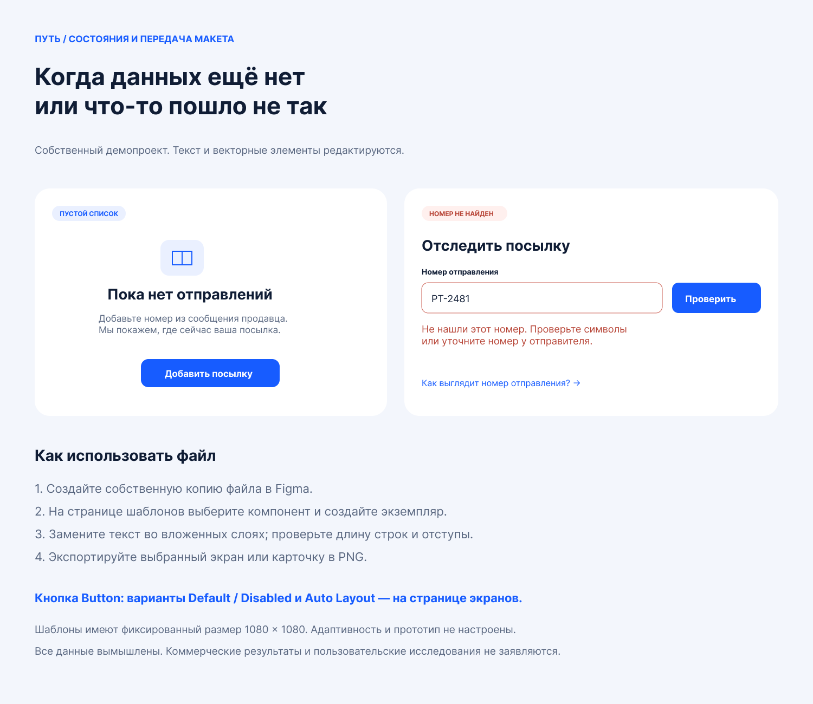

Find a parcel
Search by number or scan active items with text-labeled statuses.
PUT is a parcel-tracking dashboard concept. It connects status to the next useful action: a pickup time, a code, an address, and clear instructions.

Actual Figma export · desktop overview · original interface copy in Russian
A status such as “ready for pickup” matters only when the person can see the deadline, pickup location, code, and next steps without hunting across screens.
The original project brief was self-written. There were no interviews, operational parcel data, or live service integration. The interface tests a focused design hypothesis: put the next action next to the status, then provide detail only where needed.
Search by number or scan active items with text-labeled statuses.
Time, address, and code are grouped in the ready-for-pickup panel.
Empty list and number-not-found layouts explain a next step.
The linked Figma file contains two 1200 × 860 screens with editable text and vector layers. The source and these PNG exports remain in Russian; this English case explains the work for international viewers.

Plain-language statusesColor supports the labels; it does not carry the meaning alone.
Decision near the dataThe pickup action follows the deadline and code.
Screen scopeThese are fixed-size desktop frames, not responsive Figma variants.
I translated the desktop hierarchy into two 390 × 844 mobile compositions. They preserve the status → deadline → code → location sequence while moving repeated details into stacked cards.

Nearest pickup leads; the remaining parcels stay scannable below.

Show the code first; keep address and the three pickup steps on the same screen.
The existing Figma export documents an empty parcel list and a number-not-found state. A read of the live Figma desktop page also confirmed a Button component set with Default and Disabled variants using Auto Layout.

The case is designed to be reviewable. Each item below identifies whether it comes from the Figma source, a prior export, or this local design pass.
| Artifact | Evidence and status |
|---|---|
| Desktop source | Live authenticated Figma connector read on 28 September 2026: two 1200 × 860 frames with editable text/vector nodes. The file link is below; current anonymous access was not rechecked. |
| Figma component | Live read confirmed Button component set, State = Default / Disabled, each 159 × 64 and horizontal Auto Layout. |
| Edge states | Existing PNG exported directly from Figma on 22 September 2026 shows empty list and number-not-found compositions. Current state-page inspection was limited by the Starter MCP quota. |
| Mobile direction | Two new 390 × 844 SVG compositions created locally for this case. Editable as SVG, not present in the Figma file. |
| Not validated | Responsive Figma frames, interactive prototype, usability research, production implementation, accessibility audit, live logistics data, client outcome, and current anonymous access to Figma. |
For a commissioned version I would start from the client’s brand and real status model, map edge cases, create agreed desktop/mobile frames and component states in the client’s Figma file, then define acceptance checks for handoff. Scope, access, and payment would be agreed before work begins.
I can scope a paid pilot around a real workflow, approved source material, clear states, and a reviewable Figma handoff.